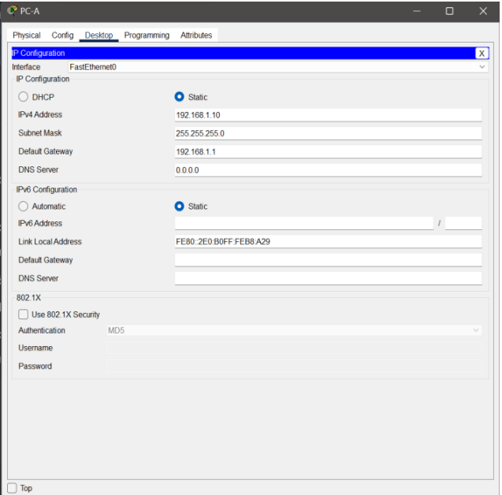
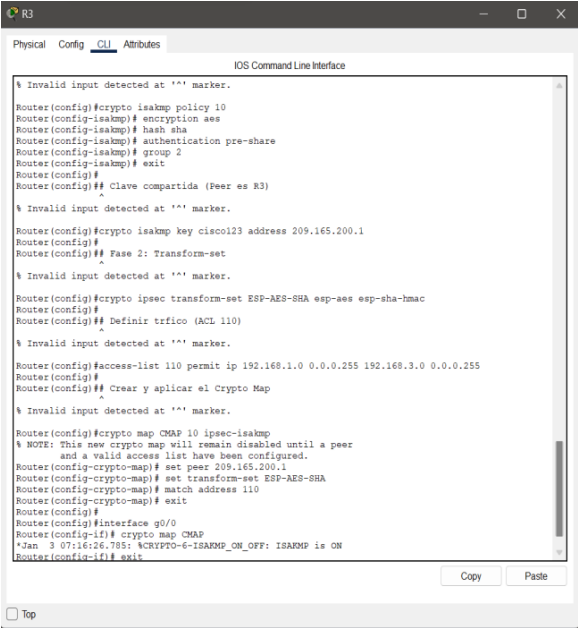
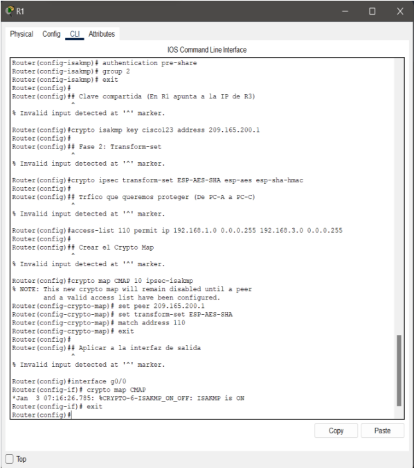
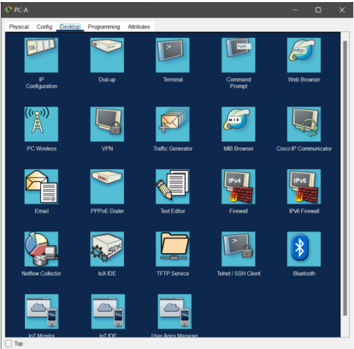
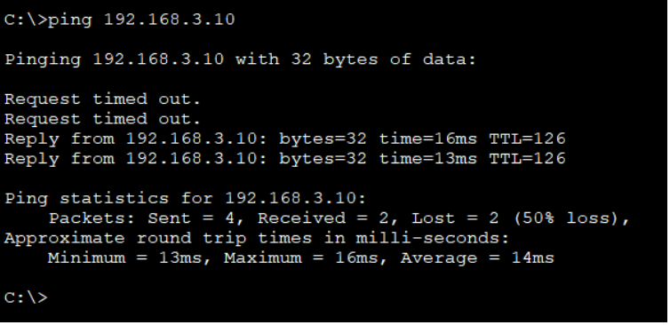
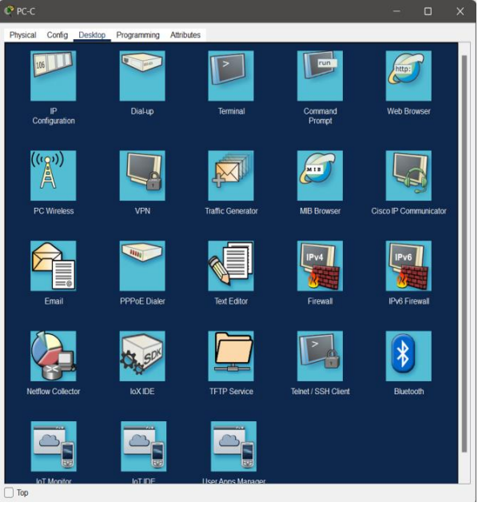
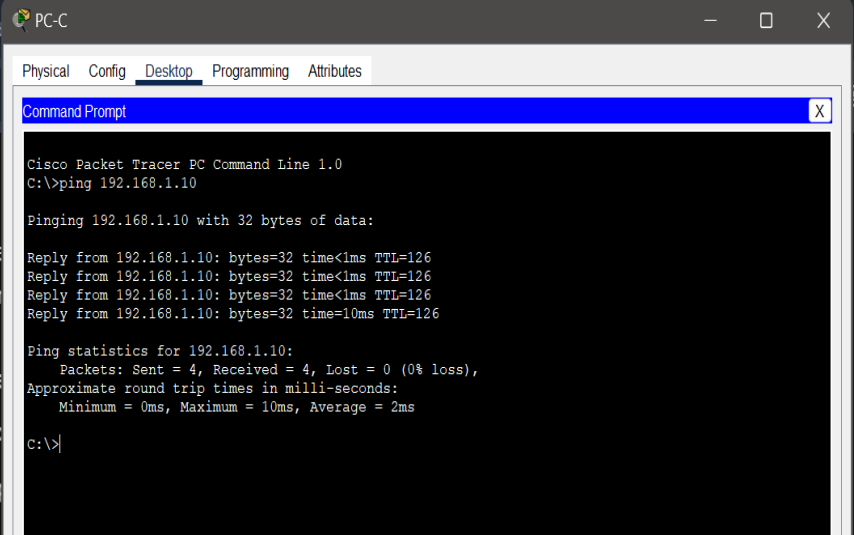
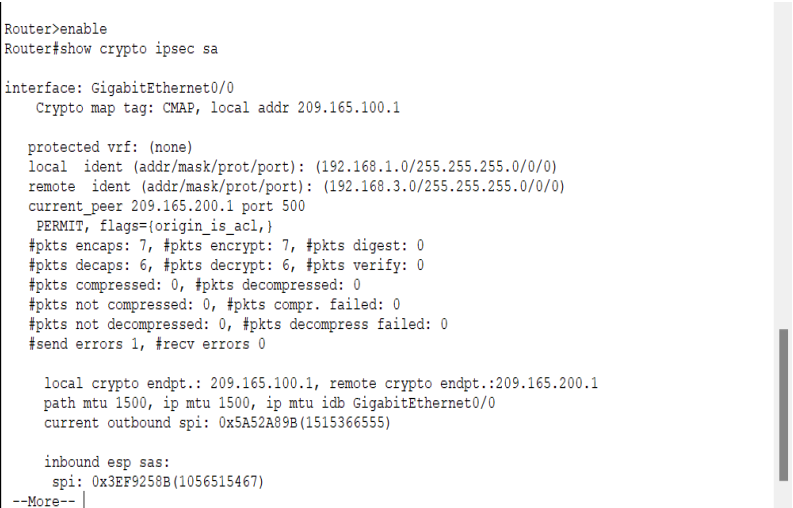
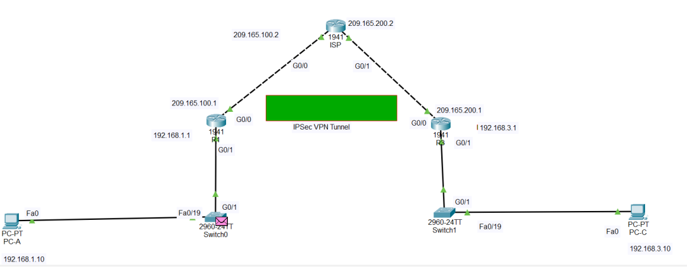

ACTIVIDAD 06 | SEGURIDAD PERIMETRAL
IMPLEMENTACIÓN IPSEC
VPN
Configuración de VPN Sitio a Sitio - CNO V Seguridad Informática
DATOS:
- Francisco Javier Cruz Juarez (177622)
- Maestro: Servando López Contreras
- Seguridad Informática
VER PDF ORIGINAL
1. Introducción
En el presente documento se detalla la configuración y validación de una red privada
virtual (VPN) de sitio a sitio utilizando el protocolo IPSec. El
proyecto simula la interconexión de dos redes locales (LAN) a través de una
infraestructura de red pública (ISP), garantizando la confidencialidad, integridad y
disponibilidad de los datos mediante técnicas avanzadas de cifrado.
3. Desarrollo Técnico
Paso 1: Crear la Topología
Coloca los siguientes dispositivos en el lienzo de Packet Tracer:
- Routers: 3 unidades del modelo 1941. (Nómbralos R1,
ISP y R3).
- Switches: 2 unidades del modelo 2960.
- PCs: 2 unidades (PC-A y PC-C).
Conexiones:
- Usa cable cruzado (o automático) para conectar los Routers entre sí por sus puertos
GigabitEthernet 0/0.
- Conecta los Routers a los Switches por GigabitEthernet 0/1.
- Conecta las PCs a los Switches por FastEthernet.
Paso 2: Configuración de Direcciones IP
Para que la VPN funcione, primero necesitamos "alcanzabilidad" básica. Entra a la consola
(CLI) de cada dispositivo y aplica estos comandos:
Evidencia 1:
Activación de la Licencia de Seguridad (K9)
Descripción Técnica: Se realizó la activación del paquete de seguridad
securityk9 en el router Cisco 1941. Este paso es indispensable en la carrera de ITI para
habilitar el motor criptográfico del IOS, permitiendo el uso de comandos crypto
necesarios para túneles VPN. La captura muestra la aceptación de los términos de la
licencia de evaluación de 60 días.
Código Utilizado:
Router(config)# license boot module c1900 technology-package securityk9
# Confirmar con "yes" la aceptación de términos
Router# write memory
Router# reload
Evidencia 2:
Configuración de Interfaces y Ruteo Estático en R1
Descripción Técnica: En esta captura se observa la configuración inicial
del Router R1 en el modo de configuración global. Se asignaron direcciones IP a dos
interfaces: la GigabitEthernet0/0 (interfaz WAN) con la IP pública 209.165.100.1 y la
GigabitEthernet0/1 (interfaz LAN) con la IP privada 192.168.1.1. Finalmente, se
configuró una ruta estática predeterminada hacia el salto del ISP (209.165.100.2) para
permitir que el router pueda enviar tráfico hacia redes externas y establecer el túnel
VPN.
Código Utilizado:
Router>enable
Router#configure terminal
Router(config)#interface g0/0
Router(config-if)#ip address 209.165.100.1 255.255.255.252
Router(config-if)#no shutdown
Router(config-if)#interface g0/1
Router(config-if)#ip address 192.168.1.1 255.255.255.0
Router(config-if)#no shutdown
Router(config-if)#exit
Router(config)#ip route 0.0.0.0 0.0.0.0 209.165.100.2
Evidencia 3:
Configuración de interfaces en el Router ISP
- Interfaz GigabitEthernet0/0: Se configuró con la IP 209.165.100.2
para establecer el enlace con el Router R1.
- Interfaz GigabitEthernet0/1: Se configuró con la IP 209.165.200.2
para establecer el enlace con el Router R3.
- Activación: Se utilizó el comando no shutdown en ambas interfaces,
lo que provocó el cambio de estado a up (activo), permitiendo el flujo de datos
físico.
Código Utilizado:
Router(config)#interface g0/0
Router(config-if)#ip address 209.165.100.2 255.255.255.252
Router(config-if)#no shutdown
Router(config-if)#exit
Router(config)#interface g0/1
Router(config-if)#ip address 209.165.200.2 255.255.255.252
Router(config-if)#no shutdown
Router(config-if)#exit
Evidencia 4:
Configuración inicial de interfaces y ruteo en el Router R3
- Interfaz GigabitEthernet0/0 (WAN): IP pública 209.165.200.1 máscara
/30, conectado directamente al ISP.
- Interfaz GigabitEthernet0/1 (LAN): IP privada 192.168.3.1 máscara
/24, puerta de enlace para la PC-C.
- Ruta Estática Predeterminada: ip route 0.0.0.0 0.0.0.0
209.165.200.2 hacia el ISP.
Código Utilizado:
Router(config)#interface g0/0
Router(config-if)#ip address 209.165.200.1 255.255.255.252
Router(config-if)#no shutdown
Router(config-if)#exit
Router(config)#interface g0/1
Router(config-if)#ip address 192.168.3.1 255.255.255.0
Router(config-if)#no shutdown
Router(config-if)#exit
Router(config)#ip route 0.0.0.0 0.0.0.0 209.165.200.2
Paso 3: Configurar las PCs
Evidencia 5: Acceso
y Ejecución de Pruebas de Red en PC-A
Descripción del Proceso:
- Se inicia haciendo clic izquierdo sobre el ícono de la PC-A en la topología.
- En la ventana que aparece, se selecciona la pestaña superior
Desktop.
- Posteriormente, se entra a la opción IP Configuration. Es aquí
donde se definen los parámetros de red necesarios para que el equipo se comunique
con su puerta de enlace (R1).
- Se selecciona el modo Static y se ingresan los datos
correspondientes a la LAN 1.
Detalle Técnico:
- IP Address: 192.168.1.10
- Subnet Mask: 255.255.255.0
- Default Gateway: 192.168.1.1 (interfaz g0/1 del Router R1)
Evidencia 6:
Configuración de Direccionamiento IP en PC-C
- Se inicia haciendo clic izquierdo sobre el ícono de la PC-C en la topología.
- En la ventana que aparece, se selecciona la pestaña superior
Desktop.
- Se entra a la opción IP Configuration para definir los parámetros
de red para comunicarse con su puerta de enlace (R3).
- Se selecciona el modo Static y se ingresan los datos
correspondientes a la LAN 3.

Detalle Técnico:
- IP Address: 192.168.3.10
- Subnet Mask: 255.255.255.0
- Default Gateway: 192.168.3.1 (interfaz g0/1 del Router R3)
Paso 4: Activación de Licencias de Seguridad R1 Y R3
Evidencia 7:
Activación de Licencias de Seguridad R1
Descripción Técnica: En esta ventana del CLI del Router R1, se observa
el proceso de actualización del software para soportar seguridad avanzada:
- Comando de Activación: Se ejecutó
license boot module c1900 technology-package securityk9, que prepara al
router para cargar el conjunto de características de seguridad en el próximo
reinicio.
- Acuerdo de Licencia: El sistema despliega el EULA con términos
legales y restricciones de exportación para uso de tecnología criptográfica.
- Aceptación: La captura termina en el prompt
ACCEPT? [yes/no]: donde el administrador debe confirmar.

Código Utilizado:
Router>enable
Router#configure terminal
Router(config)#license boot module c1900 technology-package securityk9
# Al aparecer el texto de la licencia, escribir "yes" para confirmar
ACCEPT? [yes/no]: yes
Router(config)#exit
Router#write memory
Router#reload
Evidencia 8:
Finalización exitosa R1
Descripción Técnica: En esta ventana del CLI, se observa el cierre del
proceso legal y técnico de licenciamiento:
- Aceptación de Términos: El administrador ingresó yes en respuesta a
ACCEPT? [yes/no], indicando la conformidad con el contrato de licencia de Cisco para
funciones criptográficas.
- Confirmación del Sistema: El router genera el mensaje
%IOS_LICENSE_IMAGE_APPLICATION-6-LICENSE_LEVEL confirmando que el nivel
de licencia cambiará a securityk9.
- Condición de Aplicación: El cambio tendrá efecto en el próximo
arranque (Next reboot level = securityk9).
Código Utilizado:
Router(config)# license boot module c1900 technology-package securityk9
# ... (Lectura de términos)
ACCEPT? [yes/no]: yes
# % use 'write' command to make license boot config take effect on next boot.
Router(config)# exit
Router# write memory
Router# reload
Evidencia 9:
Activación de Licencias de Seguridad R3
- Descripción Técnica: En el CLI de R3, se observa la parte final del
proceso de licenciamiento.
- Aceptación de Términos: Al igual que en R1, se ingresó yes para
aceptar el contrato de licencia de Cisco.
- Sincronización de Extremos: Este paso es vital porque un túnel VPN
no puede establecerse si uno de los routers no soporta los algoritmos de cifrado
(AES o SHA) definidos en la política ISAKMP.
- Estado Programado: El router queda listo para activar el paquete
securityk9 tras guardar y reiniciar.
Código Utilizado:
R3>enable
R3#configure terminal
R3(config)#license boot module c1900 technology-package securityk9
# ... (Lectura de términos del EULA)
ACCEPT? [yes/no]: yes
R3(config)#exit
R3#write memory
R3#reload
Evidencia 10: Lógica
de seguridad aplicada al Router R3 para establecer el túnel con el Router
R1
Descripción Técnica: En el CLI de R3, se observa la configuración
detallada de las dos fases de IPsec y la definición del tráfico que debe ser protegido:
- Fase 1 (ISAKMP Policy): Se definieron los parámetros de seguridad
para el intercambio de llaves, con encriptación AES, hashing
SHA y grupo Diffie-Hellman 2. Se estableció la clave compartida
(cisco123) para autenticarse con R1 (209.165.100.1).
- Fase 2 (Transform-set): Se creó el conjunto de transformación
ESP-AES-SHA para encriptar los datos reales que viajen por el
túnel.
- Definición de Tráfico (ACL 110): Se configuró una lista de acceso
para permitir únicamente el tráfico que va desde la red local de R3 (192.168.3.0)
hacia
la red remota de R1 (192.168.1.0).
- Crypto Map: Se unificaron todos los pasos anteriores en un mapa
llamado CMAP y se aplicó a la interfaz de salida g0/0. El sistema
confirma el éxito con el mensaje:
ISAKMP is ON.

Código Utilizado:
Router(config)#crypto isakmp policy 10
Router(config-isakmp)# encryption aes
Router(config-isakmp)# hash sha
Router(config-isakmp)# authentication pre-share
Router(config-isakmp)# group 2
Router(config-isakmp)# exit
Router(config)#crypto isakmp key cisco123 address 209.165.100.1
Router(config)#crypto ipsec transform-set ESP-AES-SHA esp-aes esp-sha-hmac
Router(config)#access-list 110 permit ip 192.168.3.0 0.0.0.255 192.168.1.0 0.0.0.255
Router(config)#crypto map CMAP 10 ipsec-isakmp
Router(config-crypto-map)# set peer 209.165.100.1
Router(config-crypto-map)# set transform-set ESP-AES-SHA
Router(config-crypto-map)# match address 110
Router(config-crypto-map)# exit
Router(config)#interface g0/0
Router(config-if)# crypto map CMAP
Evidencia 11: La
configuración final de seguridad en el Router R1
Descripción Técnica: En esta ventana del CLI de R1, se
detallan los pasos finales de la implementación de la VPN:
- Clave Compartida: Se definió la
crypto isakmp key cisco123 apuntando a la dirección IP pública de R3
(209.165.200.1) para la autenticación mutua de los dispositivos.
- Fase 2 (Transform-set): Se configuró el conjunto de transformación
ESP-AES-SHA para el cifrado de datos.
- Definición de Tráfico de Interés: Se configuró la ACL
110 para identificar el tráfico que debe protegerse, permitiendo el
flujo desde la LAN local de R1 (192.168.1.0) hacia la LAN remota de R3
(192.168.3.0).
- Aplicación del Crypto Map: Se creó el mapa CMAP vinculando el par
remoto, el conjunto de transformación y la lista de acceso. Finalmente, se aplicó a
la interfaz de salida g0/0, tras lo cual el sistema generó el mensaje de
confirmación:
ISAKMP is ON.

Código Utilizado:
Router(config)#crypto isakmp key cisco123 address 209.165.200.1
Router(config)#crypto ipsec transform-set ESP-AES-SHA esp-aes esp-sha-hmac
Router(config)#access-list 110 permit ip 192.168.1.0 0.0.0.255 192.168.3.0 0.0.0.255
Router(config)#crypto map CMAP 10 ipsec-isakmp
Router(config-crypto-map)# set peer 209.165.200.1
Router(config-crypto-map)# set transform-set ESP-AES-SHA
Router(config-crypto-map)# match address 110
Router(config-crypto-map)# exit
Router(config)#interface g0/0
Router(config-if)# crypto map CMAP
Paso 5: Acceso a herramientas de red en la PC-A
Evidencia 12: Acceso
a herramientas de red en la PC-A
Descripción del Proceso:
- Navegación de Interfaz: Tras verificar la parte física, se
selecciona la pestaña superior Desktop (Escritorio) dentro de la
ventana de configuración de la PC-A.
- Entorno de Aplicaciones: Se despliega el panel de herramientas
disponibles en el sistema operativo simulado de Packet Tracer.
- Selección de la Herramienta: Se hace clic en el ícono de
Command Prompt (Símbolo del sistema). Esta es la aplicación
fundamental para ejecutar comandos de diagnóstico de red como
ping y
tracert.
- Objetivo Técnico: El acceso a esta terminal permitirá comprobar si
la red local tiene salida hacia el router perimetral y si el tráfico puede alcanzar
el extremo remoto (PC-C) a través del túnel IPsec previamente configurado.

Código Utilizado:
# Para verificar la IP local configurada:
C:\> ipconfig
# Para probar la comunicación segura con la PC-C:
C:\> ping 192.168.3.10
Evidencia 13: Acceso a
herramientas de red en la PC-A
Descripción del Proceso:
- Selección del Dispositivo: Se inicia haciendo clic izquierdo sobre
el ícono de la PC-A en la topología.
- Navegación de Interfaz: Se selecciona la pestaña superior Desktop
(Escritorio) dentro de la ventana de configuración.
- Entorno de Aplicaciones: Se despliega el panel de herramientas
disponibles, donde se visualizan íconos como "IP Configuration", "Terminal" y "Web
Browser".
- Selección de la Herramienta: Se hace clic en el ícono de
Command Prompt (Símbolo del sistema). Esta es la aplicación
fundamental para ejecutar comandos de diagnóstico como
ping.

Evidencia 14:
Validación final desde el extremo remoto PC-C
Descripción del Proceso:
- Selección del Dispositivo: Se hace clic izquierdo sobre la PC-C en
la topología (extremo derecho).
- Navegación al Escritorio: Dentro de la ventana de configuración, se
selecciona la pestaña Desktop.
- Entorno de Aplicaciones: Se visualiza el panel de herramientas
disponibles para el usuario final en la red 192.168.3.0.
- Acceso a la Terminal: Se selecciona el ícono de Command
Prompt. Desde aquí se realizará la prueba de fuego: enviar tráfico de
regreso hacia la PC-A para asegurar que el túnel IPsec funciona correctamente en
ambos sentidos.
Objetivo Técnico
de la Captura:
En esta etapa, el entorno está listo para ejecutar el comando de diagnóstico final.
Esto sirve para validar que la ACL 110 configurada en el Router R3
identifica correctamente el tráfico "interesante" y lo encapsula hacia el Router R1.
Valores a validar:
- IP de origen (PC-C): 192.168.3.10
- IP de destino (PC-A): 192.168.1.10

Evidencia 15:
Interfaz Física de PC-C
Descripción del Proceso:
- Se inicia haciendo clic izquierdo sobre el ícono de la PC-C en el
área de trabajo (lado derecho de la topología).
- Al abrirse la ventana, se visualiza por defecto la pestaña
Physical, donde se muestra el chasis de la computadora.
- En esta vista se valida que el equipo esté encendido y que el cable de red esté
conectado correctamente al puerto FastEthernet.

Valores de
Referencia:
- IP Address: 192.168.3.10
- Default Gateway: 192.168.3.1
- Resultado del Ping a PC-A (192.168.1.10): 4
Received, 0 Lost (100% success) — ✅ Túnel IPsec funcionando
Paso 7: Verificación final de la seguridad del túnel
Evidencia 16:
Verificación final de la seguridad del túnel
Descripción Técnica: Esta captura muestra la ejecución del comando de
diagnóstico avanzado en el Router R1 para auditar el estado de la Asociación de
Seguridad (SA) de IPsec. Los puntos clave que validan el éxito de la práctica son:
- Identificación del Túnel: Se confirma que el tráfico "protegido"
corresponde al flujo entre la red local 192.168.1.0/24 (origen) y
la red remota 192.168.3.0/24 (destino).
- Puntos Finales (Endpoints): Se identifica correctamente al par
remoto con la dirección IP pública 209.165.200.1 (Router R3) a
través del puerto 500.
- Prueba de Cifrado Real: La evidencia más importante son los
contadores de paquetes: se registran 7 paquetes encapsulados y
encriptados (#pkts encaps: 7, #pkts encrypt: 7) y 6 paquetes
recibidos y descifrados (#pkts decaps: 6, #pkts decrypt: 6). Esto
demuestra que el ping realizado anteriormente no viajó como texto plano, sino que
fue procesado por el motor de seguridad del router.
- Protocolo de Seguridad: Se confirma el uso de ESP
(Encapsulating Security Payload) mediante la presencia de los identificadores de
seguridad de entrada y salida (inbound/outbound esp sas).

Código Utilizado:
Router>enable
Router#show crypto ipsec sa
# Este comando permite visualizar los contadores de encriptación
# y confirmar que el túnel está procesando tráfico de forma segura.
Paso 8: Visualización de la Topología Final
Evidencia 17:
Visualización de la Topología Final
Descripción del Proceso:
- Se muestra la vista general del área de trabajo en Cisco Packet Tracer con la
topología completamente operativa.
- La red se compone de tres segmentos principales: la LAN 1 (Sitio
R1), la Nube/ISP (Sitio Central) y la LAN 3 (Sitio R3).
- Se integró un elemento gráfico (rectángulo verde) etiquetado como "IPSec VPN
Tunnel" para representar la conexión lógica segura que se estableció
entre los routers perimetrales a través de la infraestructura pública.

Análisis Técnico de la Red:
- Estado de los Enlaces: Todos los indicadores de las interfaces
(triángulos verdes) se encuentran en estado UP, lo que confirma que
la capa física y de enlace de datos está funcionando correctamente.
- Direccionamiento: Se validan las puertas de enlace (192.168.1.1 y
192.168.3.1) y las IPs de los terminales (192.168.1.10 y 192.168.3.10) que fueron
configuradas en los pasos previos.
- Simulación de Tráfico: Se observa un sobre de color rosa en el
Switch0, indicando que hay tráfico de red activo fluyendo hacia el túnel para ser
encapsulado por el Router R1.
Conclusión
Con la implementación de este proyecto, se logró interconectar dos redes privadas
geográficamente distribuidas de manera segura. Mediante la configuración de políticas
ISAKMP y el uso de IPSec, se garantizó la confidencialidad e integridad de los datos,
demostrando que es posible utilizar una red pública (ISP) para el transporte de
información sensible sin comprometer la seguridad de la organización.
4. REFLEXIÓN TÉCNICA DEL ESTUDIANTE
OPINIÓN
PERSONAL:
La implementación de una VPN IPsec Site-to-Site me permitió comprender a fondo cómo
funciona la seguridad perimetral en entornos reales. Más allá de los comandos, entendí
que la criptografía no es opcional: cualquier organización que
transmita
datos sensibles entre sitios sin cifrado está exponiendo su información a
interceptaciones
pasivas en la red pública.
Lo más desafiante fue configurar correctamente las fases ISAKMP e IPsec
en
ambos extremos. Descubrí que cualquier discrepancia mínima — como usar AES-128 en R1 y
AES-256 en R3, o definir la ACL en dirección contraria — hace que el túnel simplemente
no se establezca, sin un mensaje de error claro. Esta experiencia me enseñó la
importancia
de la documentación precisa y la verificación sistemática en
administración
de redes.
Vinculando esto con escenarios reales: empresas como PEMEX, bancos o instituciones de
salud usan exactamente este tipo de tecnología para proteger comunicaciones entre
sucursales. Sin VPNs correctamente configuradas, un atacante con acceso a la red del ISP
podría realizar un ataque Man-in-the-Middle y leer el tráfico en texto
plano.